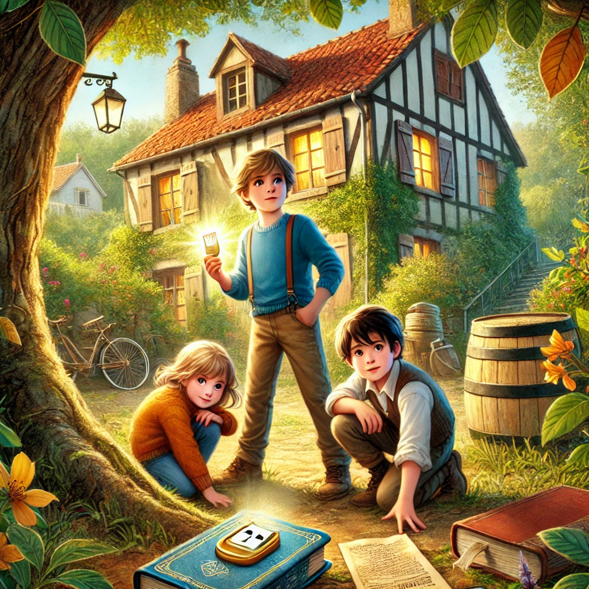
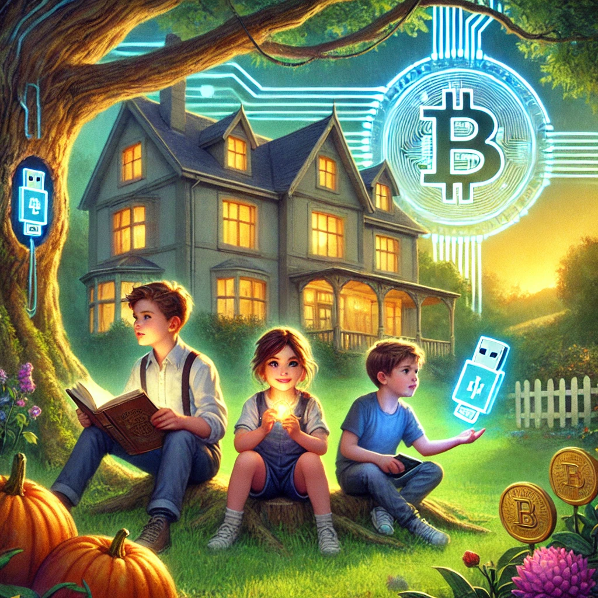
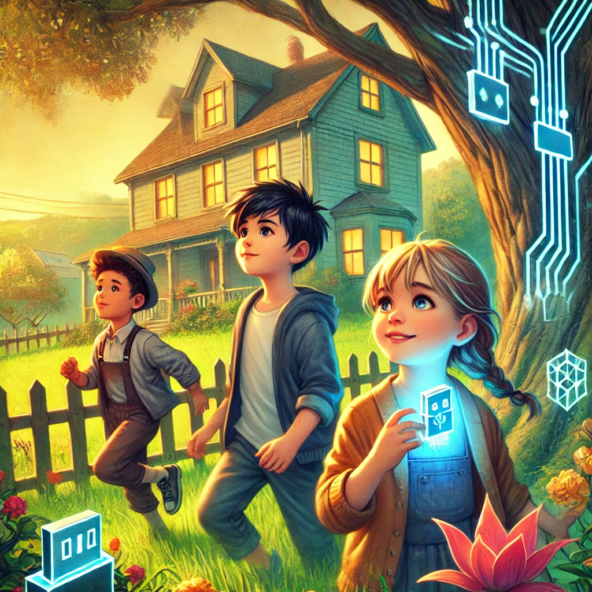

Les Trois Clés du Trésor de Grand-Père ( en cours d'écriture... )

img crée par dall-e
Chaque dimanche après-midi, les trois cousins et cousines inséparables : Léon, Alice et Arsène se retrouvaient chez leur grand-mère adorée, Mamie Jeanne, dans une vieille maison remplie de souvenirs. Ce dimanche-là, après un délicieux goûter de crêpes, Mamie Jeanne les invita à fouiller dans le grenier.
"Vous pourriez y trouver quelque chose d'intéressant," dit-elle avec un sourire mystérieux.
Léon, curieux de nature, ouvrit une vieille boîte poussiéreuse où il trouva des cassettes vidéo. Sur l'une d'elles, une étiquette indiquait : "À mes petits-enfants, avec tout mon amour - Grand-Père."
Grand-père Antoine était parti il y a dix ans, mais sa voix résonnait encore dans leurs souvenirs. Émerveillés, ils coururent brancher le magnétoscope pour voir ce que leur grand-père leur avait laissé.
Sur la vidéo, Antoine leur racontait des histoires de son enfance et de ses aventures, mais à un moment donné, il se mit à insister sur des détails étranges.
"Le chiffre trois est important," disait-il en tenant une vieille horloge en bois. "Trois comme les aiguilles d'une montre qui pointent vers le futur... et comme mes trois trésors, mes petits-enfants."
Puis il montra une carte ancienne accrochée derrière lui et murmura : "Regardez bien, le sud cache bien des secrets."
Alice, observatrice et réfléchie, prit un carnet pour noter les indices. "Vous avez vu l’horloge ? On aurait dit qu’il montrait quelque chose…"

img crée par dall-e
L’Enigme du Grand-Père
Les indices ne cessaient de s'accumuler : un vieux livre que leur grand-mère leur avait donné semblait contenir des annotations étranges, et la carte indiquait un point précis dans le jardin, près du vieux pommier. Après quelques heures de fouilles, ils déterrèrent une boîte métallique rouillée.
À l’intérieur se trouvait une clé USB et un morceau de papier où était écrit : **"Le trésor est dans l’avenir, mais il faut apprendre à le comprendre."**
Ils connectèrent la clé USB à l’ordinateur, où une autre vidéo les attendait. Grand-père Antoine leur expliquait ce qu’il avait fait vingt ans plus tôt.
"J’ai acheté quelque chose de précieux pour vous, mes petits-enfants. Cela s'appelle des bitcoins. Ils n'ont pas de forme, mais leur valeur grandira avec le temps. À vous de comprendre comment y accéder. Le code est gravé dans votre mémoire... ou peut-être dans le passé."

img crée par dall-e
L’Aventure du Web3
Avec ces mots énigmatiques, les cousins et cousines durent se plonger dans l'univers des blockchains et des cryptomonnaies. Léon passa des nuits à lire des tutoriels sur le Web3. Arsène, passionné par les casse-têtes, trouva un vieux carnet de notes appartenant à leur grand-père, rempli de mots-clés et de dessins de clés. Quant à Alice, elle découvrit que le chiffre trois, mentionné à plusieurs reprises, faisait référence à une phrase secrète en trois parties, dissimulée dans les vidéos.
Petit à petit, ils assemblèrent les pièces du puzzle. Grâce à la clé USB et aux indices, ils accédèrent finalement à un portefeuille numérique où des bitcoins les attendaient depuis deux décennies.
Un Trésor pour la Famille
Avec ce trésor, ils purent payer les frais de la maison de Mamie Jeanne pour qu’elle puisse y vivre tranquillement jusqu’à la fin de ses jours. Ils offrirent également des vacances inoubliables à toute la famille. Mais, plus important encore, ils prirent une décision réfléchie : investir une partie des bitcoins pour l’avenir.
"Grand-père aurait voulu qu’on utilise ce trésor pour créer un avenir meilleur," déclara Alice.
Ils apprirent à staker leurs cryptomonnaies, à les faire fructifier et à soutenir des projets respectueux de l’environnement grâce à la blockchain.
La leçon de grand-père
En regardant une dernière fois la vidéo de leur grand-père, ils comprirent sa véritable leçon :
"Le plus grand trésor n’est pas l’argent, mais ce que vous en faites. Si vous apprenez à le gérer avec sagesse, il pourra changer le monde, tout comme vous."
Et ainsi, les trois cousins et cousines, unis par cette aventure, devinrent les gardiens d’un trésor non seulement matériel, mais aussi spirituel : celui de la transmission, de l’éducation et de l’amour familial.